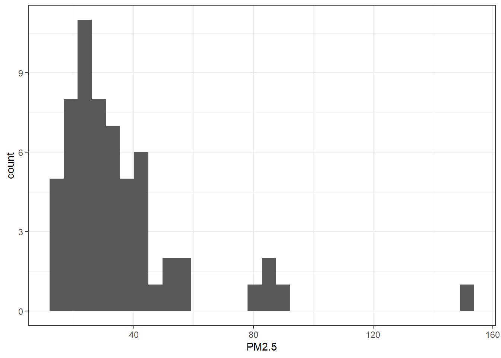

For this exercise I chose to create a dataset somewhat similar to the expected data I plain to obtain from a future research project I will be working on. The dataset is about a hypothetical project that assesses the health effects of exposure to air pollutants in wildland firefighters.
These are the packages used for this exercise:
library(here)
here() starts at C:/Users/molli/OneDrive/Documentos/UGA/Spring 2024/MADA/erickmollinedo-MADA-portfolio
── Conflicts ────────────────────────────────────────── tidyverse_conflicts() ──
✖ dplyr::filter() masks stats::filter()
✖ dplyr::lag() masks stats::lag()
ℹ Use the conflicted package (<http://conflicted.r-lib.org/>) to force all conflicts to become errors
library(lubridate)library(gtsummary)
#Uighur
Creating the dataset
First, I set a seed for reproducibility and then I defined the number of observations for this dataset
set.seed(123)#Defined 60 as the number of observations (n=60 wildland firefighters)n_wffs <-60
In this part I created the empty data frame wff_data with thirteen variables, which includes the ID, Date, three socio-demographic variables, PM2.5 as an exposure, two potential confounders and two outcomes.
And here I fill each variable with their respective values
#Variable 1: IDwff_data$ID <-1:n_wffs#Variable 2: Datewff_data$Date <-as_date(sample(seq(from =as_date("2024-01-08"), to =as_date("2024-03-01"), by="days"), n_wffs, replace = T))#Variable 3: Age. Specifying that the ranges should be from 22 to 55 years oldwff_data$Age <-sample(22:55, 60, replace =TRUE)#Variable 4: Gender. Specifying that there should be more males than females using the `prob =` statementwff_data$Gender <-map_chr(sample(c("Male", "Female"), n_wffs, replace = T, prob =c(0.84, 0.16)), as.character)#Variable 5: Ethnicity. Specifying the proportions for each ethnicity.wff_data$Ethnicity <-map_chr(sample(c("Caucasian", "African American", "Hispanic/Latino", "American Indian"), n_wffs, replace = T, prob =c(0.75, 0.15, 0.05, 0.05)), as.character)#Variable 6: PM2.5 (in micrograms per cubic meter). The concentrations were computed following a log-normal distribution `rlnorm()`, characteristic of PM2.5 data.wff_data$PM2.5<-round(rlnorm(n_wffs, meanlog =log(30), sdlog =0.5), 2)#Variable 7: Medication (If the participants take any medication for blood pressure). 0= No medication, 1=Medication. This variable depends on Age, with higher age, the highest the probability of taking blood pressure medication, using 40 years old as a cutoff point.wff_data$Medication[wff_data$Age <=40 ] <-map_int(sample(0:1, sum(wff_data$Age <=40) , replace = T, prob =c(0.95, 0.05)), as.integer)wff_data$Medication[wff_data$Age >40 ] <-map_int(sample(0:1, sum(wff_data$Age >40) , replace = T, prob =c(0.6, 0.4)), as.integer)#Variable 8: Smoking. 0=Doesn't smoke, 1=Smokes. Specifying that there are more non-smokers than smokers.wff_data$Smoking <-map_int(sample(0:1, n_wffs, replace = T, prob =c(0.85, 0.15)), as.integer)#Variable 9: Forced Vital capacity (FVC) measured by spirometry. The mean value of FVC is dependent on Gender.wff_data$FVC[wff_data$Gender =="Male"] <-round(rnorm(sum(wff_data$Gender =="Male"), mean =5.3, sd =1), 1)wff_data$FVC[wff_data$Gender =="Female"] <-round(rnorm(sum(wff_data$Gender =="Female"), mean =3.5, sd =0.5), 1)#Variable 10: Polycyclic Aromatic Hydrocarbons (PAHs) from urine samples.(There are multiple PAHs, but in this case I assume that 3-Hydroxybenzo(a)pyrene was measured). The PAH level depends on the PM2.5 concentration, with higher PM2.5 exposure, the higher the level of urine PAH.wff_data$PAH[wff_data$PM2.5<=45] <-round(rnorm(sum(wff_data$PM2.5<=45), mean =0.12, sd=0.04), 3)wff_data$PAH[wff_data$PM2.5>45] <-round(rnorm(sum(wff_data$PM2.5>45), mean =0.31, sd=0.04), 3)
And here, checking that the data frame looks good
head(wff_data)
ID Date Age Gender Ethnicity PM2.5 Medication Smoking FVC PAH
1 1 2024-02-07 54 Female Caucasian 14.44 0 0 3.9 0.118
2 2 2024-01-22 48 Male Caucasian 42.32 0 0 5.2 0.145
3 3 2024-02-27 46 Male Caucasian 85.73 0 0 3.5 0.270
4 4 2024-01-21 42 Male Caucasian 15.76 0 0 4.9 0.173
5 5 2024-01-10 36 Male Caucasian 44.48 0 0 5.4 0.120
6 6 2024-02-18 47 Male African American 44.07 0 0 6.1 0.161
ID Date Age Gender
Min. : 1.00 Min. :2024-01-10 Min. :24.00 Length:60
1st Qu.:15.75 1st Qu.:2024-01-20 1st Qu.:33.75 Class :character
Median :30.50 Median :2024-02-03 Median :43.00 Mode :character
Mean :30.50 Mean :2024-02-03 Mean :41.05
3rd Qu.:45.25 3rd Qu.:2024-02-17 3rd Qu.:48.50
Max. :60.00 Max. :2024-03-01 Max. :55.00
Ethnicity PM2.5 Medication Smoking
Length:60 Min. : 14.44 Min. :0.00 Min. :0.0000
Class :character 1st Qu.: 23.50 1st Qu.:0.00 1st Qu.:0.0000
Mode :character Median : 28.88 Median :0.00 Median :0.0000
Mean : 35.90 Mean :0.25 Mean :0.1333
3rd Qu.: 40.69 3rd Qu.:0.25 3rd Qu.:0.0000
Max. :151.67 Max. :1.00 Max. :1.0000
FVC PAH
Min. :2.800 Min. :0.0210
1st Qu.:4.075 1st Qu.:0.1027
Median :5.250 Median :0.1340
Mean :5.073 Mean :0.1519
3rd Qu.:6.000 3rd Qu.:0.1640
Max. :7.300 Max. :0.3650
And now I created a summary table with some of the descriptive statistics of this dataset, separating by gender.
#Just showing the summary statistics of age, ethnicity, PM2.5, FVC and PAHs, computing the mean and sd, median and IQR and the minimum and maximum valuessumtable <- wff_data %>%select(Age, Gender, PM2.5, FVC, PAH) %>%tbl_summary(by= Gender, type =all_continuous() ~"continuous2",statistic =all_continuous() ~c("{mean} ({sd})", "{median} ({p25}, {p75})", "{min}, {max}")) %>%bold_labels()#Print the generated tablesumtable
Characteristic
Female, N = 11
Male, N = 49
Age
Mean (SD)
38 (12)
42 (9)
Median (IQR)
35 (27, 49)
43 (36, 48)
Range
24, 54
26, 55
PM2.5
Mean (SD)
44 (41)
34 (18)
Median (IQR)
35 (18, 40)
28 (24, 41)
Range
14, 152
16, 90
FVC
Mean (SD)
3.62 (0.49)
5.40 (1.00)
Median (IQR)
3.80 (3.30, 3.95)
5.40 (4.90, 6.10)
Range
2.80, 4.30
3.30, 7.30
PAH
Mean (SD)
0.15 (0.06)
0.15 (0.08)
Median (IQR)
0.14 (0.12, 0.17)
0.13 (0.10, 0.16)
Range
0.07, 0.27
0.02, 0.37
First I want to plot a histogram to check if the PM2.5 data follow a normal distribution (it should not)
`stat_bin()` using `bins = 30`. Pick better value with `binwidth`.

The histogram confirms that the concentrations do not follow a normal distribution, since the data is right-skewed. This should follow a logarithmic distribution.
Here I am showing a plot to explore the association between the level of urine PAHs and PM2.5 concentration from the wildland firefighter subjects. I decided to separate them by gender.
Based on this graph, it is hard to tell if FVC depends on PM2.5 concentration. Given so, I decided to fit a model and check for associations. In this case, since PM2.5 follows a log-normal distribution, I decided to use a log generalized linear model from the quasipoisson family. I used PM2.5, Smoking and Medication as predictors for FVC as an outcome.
log_fit <-glm(FVC ~ PM2.5+ Smoking + Medication, data = wff_data, family =quasipoisson(link ="log"))summary(log_fit)
Call:
glm(formula = FVC ~ PM2.5 + Smoking + Medication, family = quasipoisson(link = "log"),
data = wff_data)
Coefficients:
Estimate Std. Error t value Pr(>|t|)
(Intercept) 1.6225347 0.0583858 27.790 <2e-16 ***
PM2.5 -0.0003841 0.0013235 -0.290 0.773
Smoking 0.0238213 0.0883566 0.270 0.788
Medication 0.0471521 0.0690668 0.683 0.498
---
Signif. codes: 0 '***' 0.001 '**' 0.01 '*' 0.05 '.' 0.1 ' ' 1
(Dispersion parameter for quasipoisson family taken to be 0.2747653)
Null deviance: 15.940 on 59 degrees of freedom
Residual deviance: 15.764 on 56 degrees of freedom
AIC: NA
Number of Fisher Scoring iterations: 4
Based on the log_fit model, it seems that there is no interaction of PM2.5 or any of the covariates to the FVC outcome. Which makes sense, since this outcome was mapped independently from the PM2.5 concentrations. However, in the real-life study I hope to find an association among these variables.
And finally, a model to explore if PM2.5 is a predictor of PAH levels. Also assessing Smoking and Medication as confounders.
log_fit2 <-glm(PAH ~ PM2.5+ Smoking + Medication, data = wff_data, family =quasipoisson(link ="log"))summary(log_fit2)
Call:
glm(formula = PAH ~ PM2.5 + Smoking + Medication, family = quasipoisson(link = "log"),
data = wff_data)
Coefficients:
Estimate Std. Error t value Pr(>|t|)
(Intercept) -2.324968 0.100237 -23.195 < 2e-16 ***
PM2.5 0.009844 0.001714 5.743 3.96e-07 ***
Smoking 0.217576 0.144650 1.504 0.138
Medication 0.081541 0.122211 0.667 0.507
---
Signif. codes: 0 '***' 0.001 '**' 0.01 '*' 0.05 '.' 0.1 ' ' 1
(Dispersion parameter for quasipoisson family taken to be 0.02641762)
Null deviance: 2.3605 on 59 degrees of freedom
Residual deviance: 1.5498 on 56 degrees of freedom
AIC: NA
Number of Fisher Scoring iterations: 5
In this case, we reject the null hypothesis that there is no association between PM2.5 and PAH levels (the outcome). Of course this was expected, since this was one of the requirements when creating the data set. Based on this model we didn’t find an association between smoking and the use of medication with the PAH outcome.